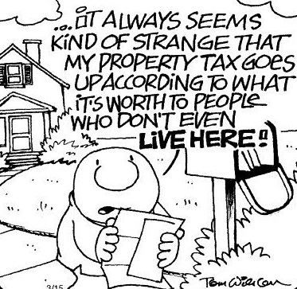
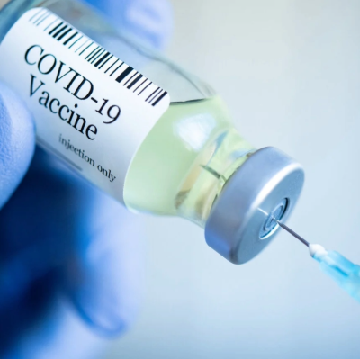
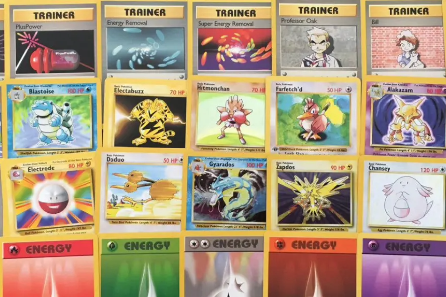

Celebrated data by working with a team of undergraduates around the clock in order to find and share insights gathered from a large, rich, and complex dataset.
Goal: Analyze data to provide advice to the American Bar Association to help improve their pro bono legal advice site.
Tools: Python, R, RStudio, Excel

Executed a comprehensive data analysis project that includes data wrangling, logistic transformations, polynomial model selection, and robust standard error calculations.
Goal: Determine what factors affect property taxes paid for a one resident family in Durham County, North Carolina
Tools: R, RStudio

Created an appointment scheduler for vaccinations consisting of patients and caregivers who track vaccine stock and appointments.
Goal: Connect a database server to an application that runs on the command line terminal.
Tools: Python, SQL, Microsoft Azure, Pymssql

Crafted an interactable notebook consisting of various data visualizations to detect trends about the video games sold within the past years.
Goal: Transform and clean a complex data set to then unveil meaningful insights through a range of engaging data visualizations.
Tools: Observable, Vega-Lite

Implemented an interactive Discord Bot utilizing Discord's bot API that allows users to simulate opening pokemon card packs with built in slash commands.
Goal: Create a functional discord bot from the bottom up.
Tools: JavaScript, Node.js